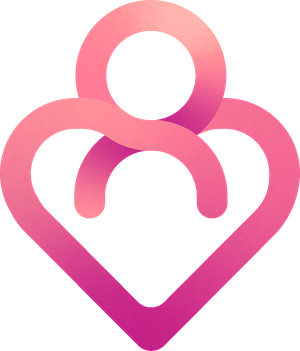

Osteopatia pediátrica
Bebês que choram muito, mamam pouco ou não dormem quase sempre estão dizendo algo com o corpo. O toque é suave e a avaliação, minuciosa.

Osteopatia adulto e pediátricaOsteopatia e posturologia com avaliação criteriosa e mãos que escutam o corpo — do bebê que não dorme ao adulto que convive com dor há anos.


Sou fisioterapeuta e osteopata, e trabalho com uma ideia simples: o corpo não sente dor por acaso. Cada sintoma tem uma origem — às vezes longe de onde dói — e é essa origem que a osteopatia procura.
No consultório, cada avaliação é individual e sem pressa: entender a história, o dia a dia, a postura, o sono. Com bebês, o cuidado é ainda mais delicado — e envolve a mãe tanto quanto a criança.
Fisioterapeuta • Osteopatia adulto e pediátrica • Crefito2/25112FTrês frentes de cuidado, o mesmo princípio: encontrar a causa e devolver movimento, conforto e sono.
Bebês que choram muito, mamam pouco ou não dormem quase sempre estão dizendo algo com o corpo. O toque é suave e a avaliação, minuciosa.
Dores que voltam sempre, tensões de longas horas sentado, enxaquecas e limitações de movimento — tratadas na origem, não no lugar onde doem.
Avaliação global do equilíbrio do corpo: como você pisa, olha, respira e se sustenta. Os desequilíbrios se acumulam — e aparecem como dor.
Conversa sobre sua história, rotina e queixas, seguida de uma avaliação osteopática e postural completa. Nada de tratar antes de entender.
Técnicas manuais suaves e precisas, aplicadas onde a origem do problema realmente está — com explicação de cada etapa durante a sessão.
Orientações para casa e reavaliação do que mudou. O objetivo não é você voltar sempre: é o seu corpo se sustentar sozinho.
Bebês que voltam a dormir, adultos que voltam a se mover. Quem conta são os pacientes.
Na manhã seguinte ao atendimento, essa mãe mandou uma mensagem. O bebê voltou a mamar, passou a dormir de 3 em 3 horas e acordou sorrindo.
É esse o tipo de mudança que a osteopatia pediátrica busca: não silenciar o choro, mas resolver o que o está causando.
Falar sobre o meu caso


Se você convive com dor, ou se o seu bebê chora e não dorme, uma avaliação osteopática pode mostrar o que ninguém olhou ainda. Me chame no WhatsApp e conte o seu caso — respondo pessoalmente.
Agendar minha avaliação